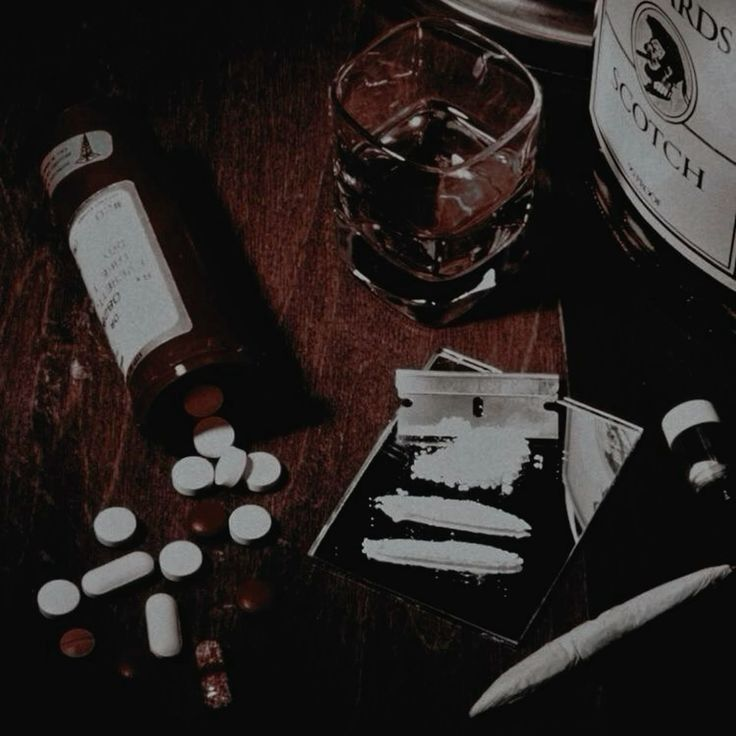

Mercure
His real name is Daniel Mühe.
Mercure is quite a taciturn person. As a young man he was pretentious and haughty. Poverty softened him towards others but made him sadder and lowered his self-esteem considerably.
He has a bad temper and is unfriendly.
He has an addictive behavior and easily falls into it. He feels this need to silence the dark thoughts he may have.
Childhood
10 January 1995 on Earth (equivalent to 1244 on Sadi Dunia)
Daniel grew up on Earth like Maeve. Son of a rather wealthy family, he grew up without difficulty. After high school, he joined medical school to follow his father's path without real ambition. There, he started taking stimulants to better follow classes, drinking alcohol to relax on the weekends… Daniel quickly realized that he had a tendency to addiction which became more pronounced with age. When he was intern, he regularly stole many pills for his personal consumption.
He was 22 years old and doing urbex in an old abandoned hospital when he discovered a loophole and ventured there. It thus happened to Painari, a city state of Sadi Dunya.
Painari
Once arrived in the streets of Painari Daniel will live with difficulty. He will spend a long period without having a home, not having enough to eat and suffering from intense cravings. It is during this period that he will be affected by the disease present in Painari and that a malformation will appear on his leg which becomes necrotic and attracts small scavengers, the Ojus.
On a daily basis, to earn a living, he takes care of the poor inhabitants of the neighborhoods who offer him a little food in return. Little by little his reputation is made in the low districts and he is thus approached by the resistance and becomes an important member of it.
One day he also finds Ilian in a dark alley who is alone because he scares all the townspeople who think he is a demon. He will take him under his wing and help him like a father would.
Ilian
Mercure picked up Ilian and raised him. He cares a lot for him but finds it very difficult to deal with it.
.png)
Gyulladt
Gyulladt and Mercure have had a relationship for a while. This was purely sexual and did not include any feelings.
.png)
Brunelle
When Gyulladt got pregnant, she decided to keep the child even though Mercure didn't want to take care of it. So he didn't raise Brunelle but comes from time to time to visit her. He still has a lot of affection for her
.png)
Stellaria
They are both members of the rebellion. Mercure confided Ilian to her.
.png)
